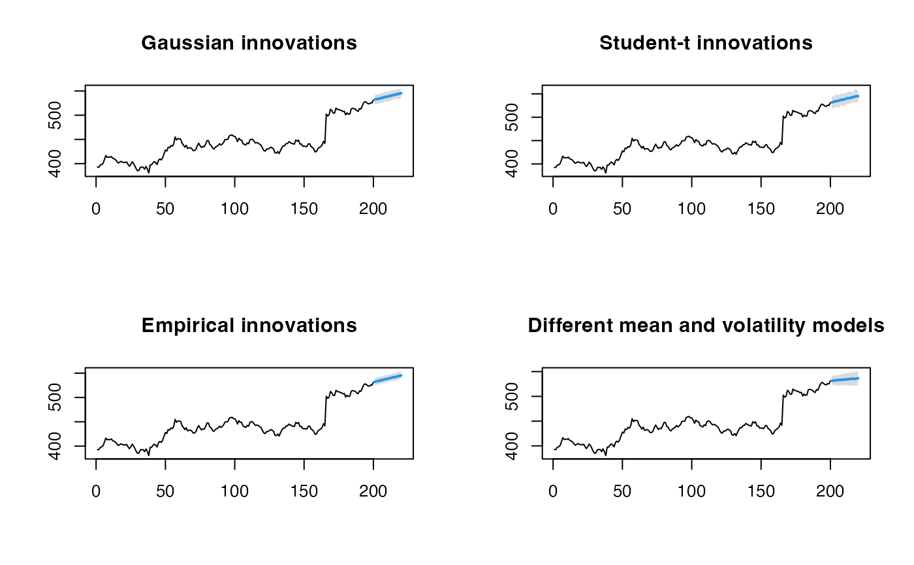

condvolf.RdCombines a mean model and a volatility model to produce probabilistic forecasts. Uncertainty is propagated from two sources: simulated innovation draws and simulated volatility paths derived from the variance model's residuals via bootstrap.
condvolf(
y,
h = 10L,
mean_model = forecast::auto.arima,
sigma_model = forecast::auto.arima,
innovation = c("empirical", "gaussian", "student"),
level = 95,
B = 1000L,
bootstrap_vol = TRUE,
...
)A numeric vector or time series of class ts.
Forecasting horizon.
Function to fit the mean model (default: forecast::auto.arima).
Options include forecast::auto.arima, forecast::ets, forecast::thetaf,
or any custom function that returns an object with forecast method.
Function to fit the variance model on squared residuals
(default: forecast::auto.arima).
Distribution for standardized innovations. One of
"gaussian" (fastest, often sufficient), "student" (heavy-tailed),
or "empirical" (non-parametric, most flexible).
Confidence level for prediction intervals (default: 95).
Number of simulated paths (default: 2000).
Whether to bootstrap volatility residuals (default: TRUE). If FALSE, uses parametric normal approximation for volatility.
Additional arguments passed to mean_model and sigma_model.
A forecast object with components:
xOriginal time series.
meanPoint forecast (mean of simulations).
lowerLower prediction interval bound.
upperUpper prediction interval bound.
levelConfidence level.
simsMatrix of simulated forecast paths (h x B).
modelList containing mean and sigma model fits.
residualsResiduals from the mean model.
standardized_residualsScaled standardized residuals used for innovation fitting.
methodCharacter string describing the method used.
# \donttest{
library(forecast)
# Basic usage with Google stock data
y <- fpp2::goog200
# Gaussian innovations (fastest, often sufficient)
fc1 <- condvolf(y, h = 20, innovation = "gaussian")
plot(fc1)
# Student-t innovations (heavy-tailed)
fc2 <- condvolf(y, h = 20, innovation = "student")
#> Warning: NaNs produced
plot(fc2)
# Empirical innovations (non-parametric)
fc3 <- condvolf(y, h = 20, innovation = "empirical")
plot(fc3)
# Using different mean and volatility models
fc4 <- condvolf(y, h = 20,
mean_model = forecast::thetaf,
sigma_model = forecast::ets,
innovation = "gaussian")
# Compare prediction intervals
par(mfrow = c(2, 2))
plot(fc1, main = "Gaussian innovations")
plot(fc2, main = "Student-t innovations")
plot(fc3, main = "Empirical innovations")
plot(fc4, main = "Different mean and volatility models")

par(mfrow = c(1, 1))
# }